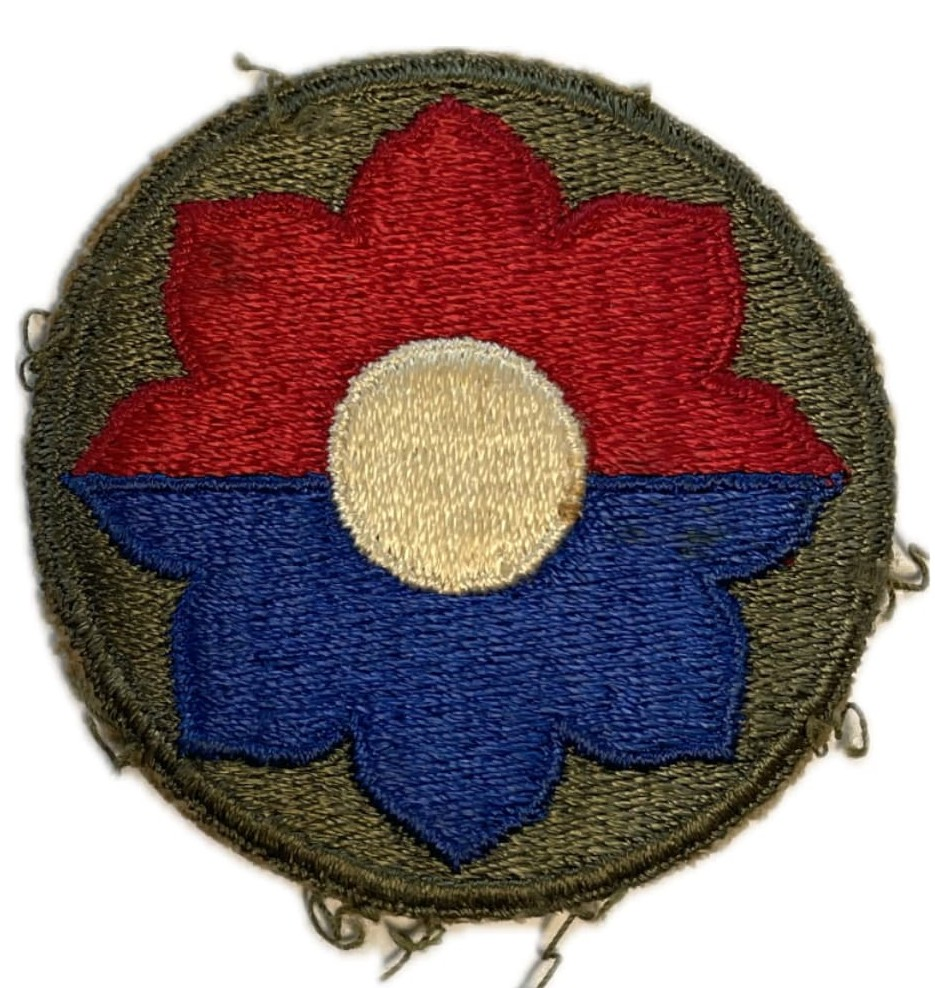

Introduction
Surnommée les « Old Reliables » (les Vieux Confiables) ou encore « Octofoil », la **9th Infantry Division** de l'US Army est l'une des unités d'infanterie américaines les plus aguerries et expérimentées de la Seconde Guerre mondiale.
Faisant partie des rares divisions d'infanterie ayant combattu sur deux théâtres d'opérations majeurs (l'Afrique du Nord / Méditerranée puis l'Europe du Nord-Ouest), la 9e Division a accumulé près de 300 jours de combat ininterrompu du débarquement en Algérie en 1942 jusqu'au cœur de l'Allemagne nazie en 1945.
Origine et insigne
Créée en juillet 1918 durant la Première Guerre mondiale, la division adopte pour insigne un motif en forme de fleur à huit pétales géométriques (appelé Octofoil). Dans l'héraldique médiévale, l'octofoil représentait le huitième fils ; l'insigne rappelle ainsi que la 9th était la 8e division d'infanterie de l'armée régulière créée à cette époque.
Les couleurs rouge et bleue représentent l'artillerie et l'infanterie, entourant un centre blanc. Réactivée en août 1940 à Fort Bragg sous le commandement du général **Manton S. Eddy**, la division se forge une cohésion exemplaire.

1942–1943 : Le baptême du feu en Afrique du Nord et en Sicile
La division débarque en Afrique du Nord le 8 novembre 1942 dans le cadre de l'**Opération Torch** à Port-Lyautey au Maroc. Elle s'illustre ensuite lors de la rude campagne de Tunisie, notamment au passe de Kasserine et lors de la capture décisive de Bizerte en mai 1943.
En août 1943, la 9th Infantry prend part à l'**Opération Husky** (l'invasion de la Sicile), perçant les lignes de défense allemandes à Troina avant d'être rappelée en Grande-Bretagne pour préparer le débarquement en Normandie.

1944–1945 : Normandie, Hürtgen et le pont de Remagen
Débarquée sur Utah Beach le 10 juin 1944 (D+4), la division coupe le Cotentin à Barneville et mène l'assaut décisif pour la libération du port stratégique de **Cherbourg**. Elle s'enfonce ensuite dans l'enfer du bocage jusqu'à la percée de l'Opération Cobra.
À l'automne 1944, la 9e Division s'engage dans la sanglante **bataille de la forêt de Hürtgen**, perdant des milliers d'hommes pour conquérir quelques kilomètres de bois fortifiés. En mars 1945, elle s'illustre lors de la capture historique du **pont de Remagen**, étendant la tête de pont alliée à l'est du Rhin.
Bilan humain et héritage
Au cours de ses 264 jours de combat en Europe et en Méditerranée, la 9th Infantry Division déplore plus de **22 600 pertes au combat** (dont environ 4 580 tués).
Quatre de ses hommes ont été décorés de la prestigieuse Medal of Honor. La division a capturé plus de 130 000 prisonniers ennemis durant toute la durée du conflit.
Voir aussi
Page du Musée HOP WW2 – Section Unités & Divisions Célèbres